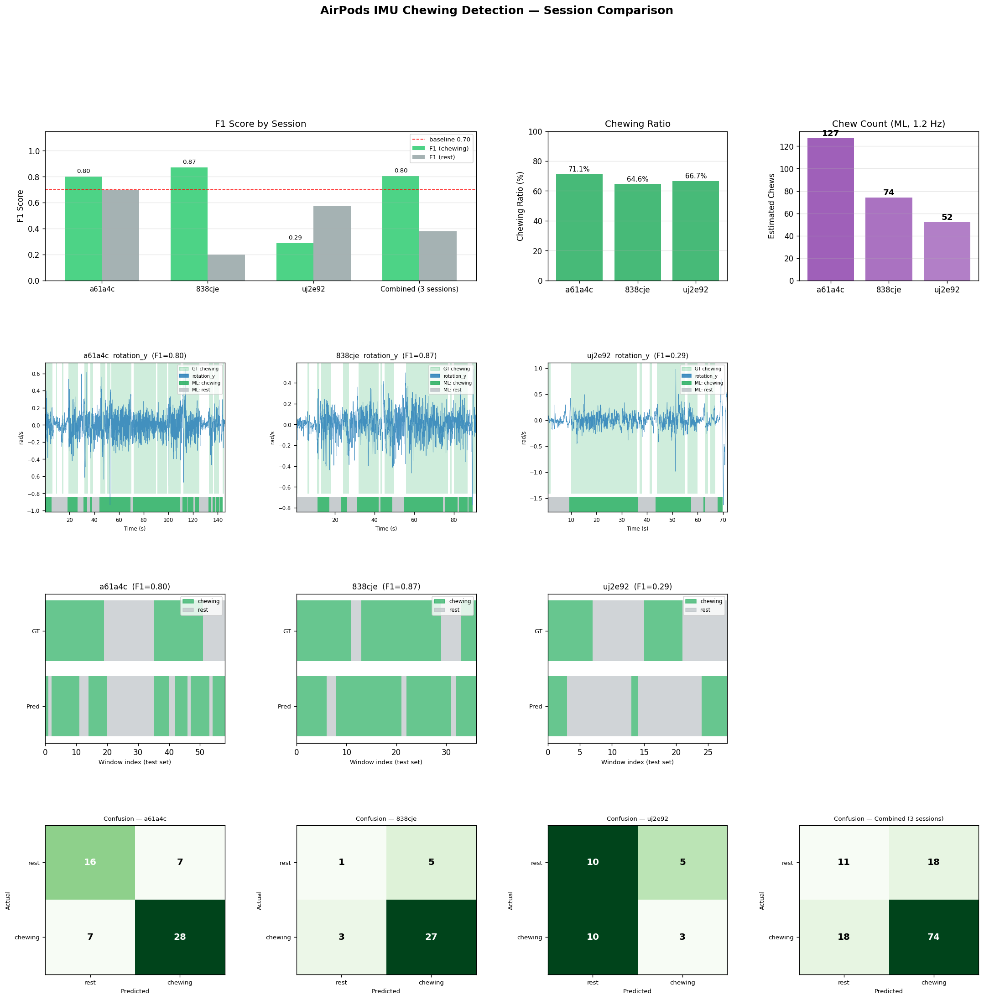

3개 세션 독립 학습 + 합산 학습 / Random Forest n=20 / window 2s stride 0.5s
| 세션 | 길이(초) | 윈도우 | 씹기 비율 | 추정 씹기 수 | Accuracy | F1 (chewing) | F1 (rest) | Precision↑ | Recall↑ |
|---|---|---|---|---|---|---|---|---|---|
| a61a4c | 145.3 | 287 | 71.1% | 127 | 75.9% | 0.800 | 0.696 | 0.8 | 0.8 |
| 838cje | 90.8 | 178 | 64.6% | 74 | 77.8% | 0.871 | 0.200 | 0.844 | 0.9 |
| uj2e92 | 70.9 | 138 | 66.7% | 52 | 46.4% | 0.286 | 0.571 | 0.375 | 0.231 |
| Combined (3 sessions) | — | 603 | —% | — | 70.2% | 0.804 | 0.379 | — | — |
Row 1: F1 비교 바차트 / 씹기 비율 / 추정 씹기 수
Row 2: IMU rotation_y 신호 + GT 라벨(녹색 배경) + ML 예측 스트립(하단 10%)
Row 3: GT vs 예측 타임라인 (test set)
Row 4: Confusion Matrix (세션별 + 합산)

rotation_x_rms: 0.126rotation_y_rms: 0.111user_accel_y_rms: 0.109user_accel_y_rms: 0.186user_accel_y_std: 0.154rotation_x_rms: 0.102user_accel_z_rms: 0.118user_accel_z_std: 0.110rotation_z_std: 0.102ml/compare_sessions.py로 자동 생성되었습니다.ml/utils.py · make_windows_with_times) — AirPods 50Hz 신호를 2초/0.5s stride 슬라이딩 윈도우로 분할, 6축×(RMS+Std) = 12차원 피처 추출sklearn, n=20) — time-based 80/20 split으로 학습·평가matplotlib) — F1 바차트, IMU 신호+GT라벨, 예측 타임라인, Confusion Matrixml/compare_sessions.py).venv/bin/python ml/compare_sessions.py